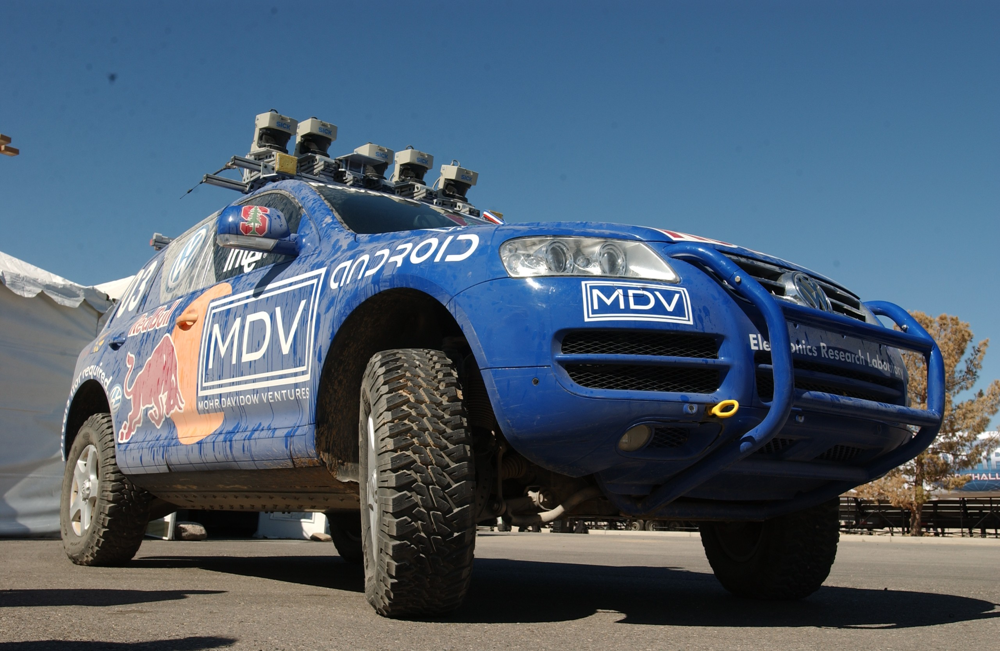

Inhouds tafel
- Google driverless car
- Praktische proef
- Lidar
- GPS
- Kalman filter
- A*-search
- PID-controller
- Simulatie software
Inhouds tafel
- Google driverless car
- Praktische proef
- Lidar
- I²C
- GPS
Kalman filter- A*-search
PID-controllerSimulatie software
Google driverless car


I2C
 Met en zonder vroegere beëindiging
Met en zonder vroegere beëindiging
Breadth First Search en Dijkstra's Alogoritme vergeleken
Breadth First Search en Greedy Best-First Search vergeleken
Breadth First Search en Greedy Best-First Search vergeleken 2
Dijkstra's Algorithme en Greedy Best-First Search vergeleken
Dijkstra's Algorithme en Greedy Best-First Search vergeleken